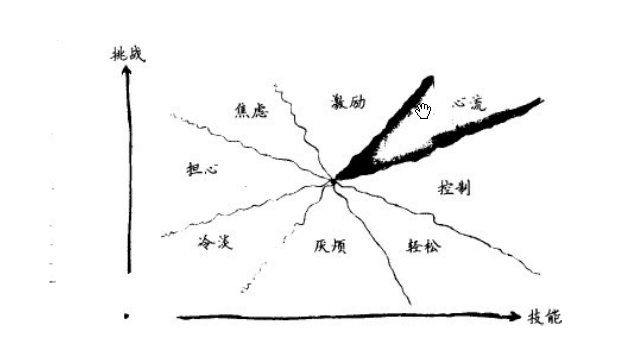
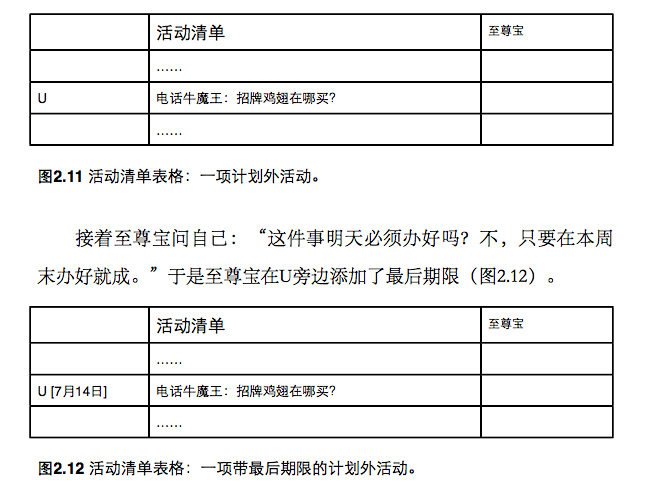
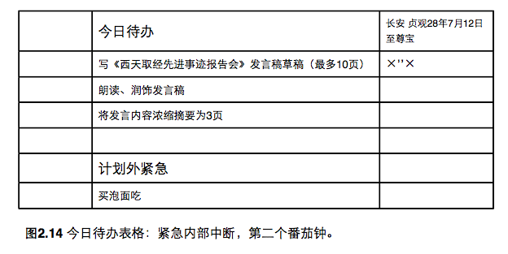
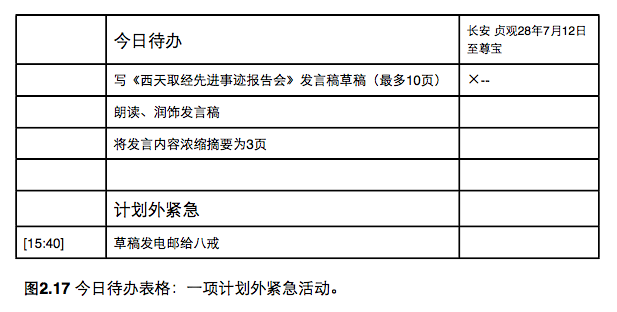
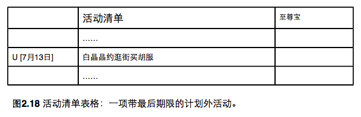
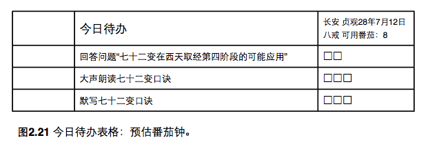
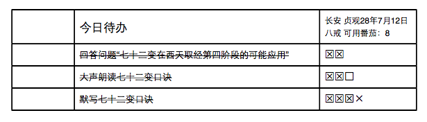
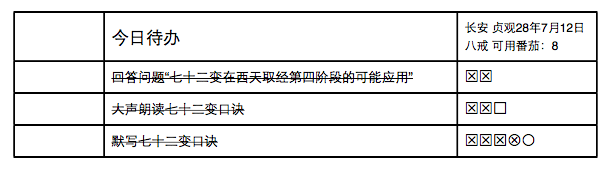
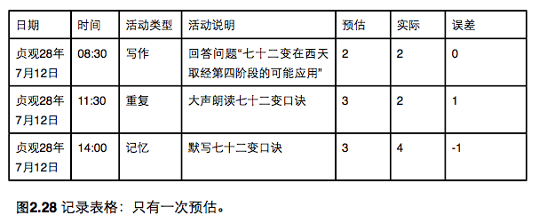
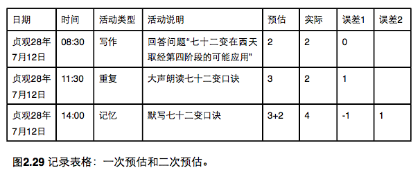

GTD
Getting Things Done 的縮寫，也是 David Allen 的一本書名。
「時間」和「管理」連在一起會誤導人們以為「時間管理」是要對時間進行管理，而時間是無法進行管理的。這一概念實際上意味著它是「管理我們自己的活動，以確保它們是在規定期限內完成，這是一個難以管理的持續的資源」。
— David Allen 2001
- GTD 的基本理論是把一個人擱在腦中的所有事情從大腦中移出來，記錄到紙上。這樣，大腦便會不被多餘的事情打攪而集中於現在所需完成的事情上面。
- 同時建立一個可靠的個人時間管理系統，通過收集、整理、組織、回顧與行動五個步驟來有條不紊而高效率地處理個人生活中的所有事情。
- 強調從小處入手，強調速度和效率，建立了一套工具和方法。
一次只做一件事

有一種精神狀態稱為「心流」，它具有以下特點：
- 明確的目標
- 集中、專注
- 自我意識消失
- 時間感扭曲
- 直接和即時反饋
- 能力水平與面對面的平衡
- 個人控制感
- 工作本身的內在獎勵
- 行為與認知的合一
心流是一種創造性的狀態。如果保持心流的狀態，效率不就提高了嗎？不是的，心流狀態下缺乏全局觀念，創造力與統籌力難以並存。時不時地，我需要縱覽全局進行戰略決策，部署行動，以便在下一次的心流期間能夠全身心投入這項行動中。
在進入心流階段之前，我扭動一個番茄鐘，讓它稍後喚醒我，這樣我們以暫時換上戰略眼光，觀察全局，然後再次回到心水流中————就是節奏。
番茄工作法
PDCA
品質管理循環。它是一個解決問題的周期流程，可用於對其它流程進行改進。
- Plan 計劃 - 定義預期的結果，以及達成它所需的流程
- Do 執行 - 實施該流程
- Check 評估 - 對流程進行衡量
- Action 應用
番茄工作法是一套典型的 PDCA 流程
階段
- 規劃 (一天的開始) : 決定當天的活動
- 追蹤 (全天) : 收集原始數據，關於所投入的工夫，以及其他感興趣的指標
- 記錄 (一天的結束) : 編制每日觀察檔案
- 處理 (一天的結束) : 將原始數據轉化為可用訊息
- 觀察 (一天的結束) : 用容易理解的格式列出訊息，找出如何改進
工具
- 番茄鐘
- 活動清單
- 列出所有要處理的項目
- 今日待辦表格
- 標題 / 地點 / 日期 / 作者
- 從活動清單挑選出當天要處理的項目
- 列出當天內要做的事情，按優先順序
- 表格分出一段，標為「計劃外緊急」，保留給某些“非常突然”又必須處理的事。
- 記錄表格
- 記錄的方式以簡單、方便為優先考量
規則與標記法
- 番茄鐘一輪為 25 分鐘，不可中途打斷，亦不能分剖。記錄表格的時間單位就是一個番茄鐘。
- 若番茄鐘被某人某事打斷，則該番茄鐘視為無效。
- 完成一個番茄鐘，則在記錄表格上標出一個
X，然後休息 5 分鐘。 - 每四個番茄鐘，休息 15-30 分鐘
- 若在番茄鐘結束前完成工作，可利用剩餘時間檢查或重覆你做過的事，做些小改進，記錄你所學習到的，直到番茄鐘結束。
- 如果在番茄鐘開始前五分鐘就把事情做完了，再做也只會畫蛇添足的情況下，可將此番茄鐘取消。
減少中斷
- 記錄中斷，但不馬上執行。
- 記錄被內心想要「中斷」(臨時想去做別的事情)的次數，標記為
'。 - 把原本會打斷的事記錄在「活動清單」中，並標記
U，代表是臨時追加的「計劃外活動」，最好附上最後期限。
 - 若被中斷的工作緊急，可以記錄在今日待辦中的「計劃外緊急活動」。
 - 記錄被外部「中斷」（被他人打斷）的次數，標記為
-。

 - 使每一次潛在「中斷」清晰可見，這樣我們才能在事後分析與檢討如何改進。
預估工時
- 在每天開始時，預估活動清單中每個項目需要花費多少個番茄鐘完成。
- 超過 5-7 個番茄鐘代表工作過於複雜，最好將其拆分成幾項活動進行。
- 不夠 1 個番茄鐘的項目可與其它同類型的活動合併。
- 每天的可用番茄數是有限的。
 - 記錄多估和低估的情況
 - 再次評估番茄鐘，用不同形狀的填空格
 - 記錄預估與實際花費的誤差
- 標示哪些項目進行了重新預估(二次或三次預估)

